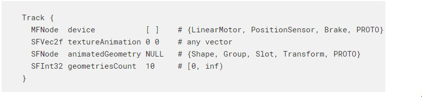
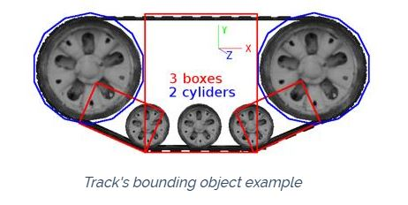
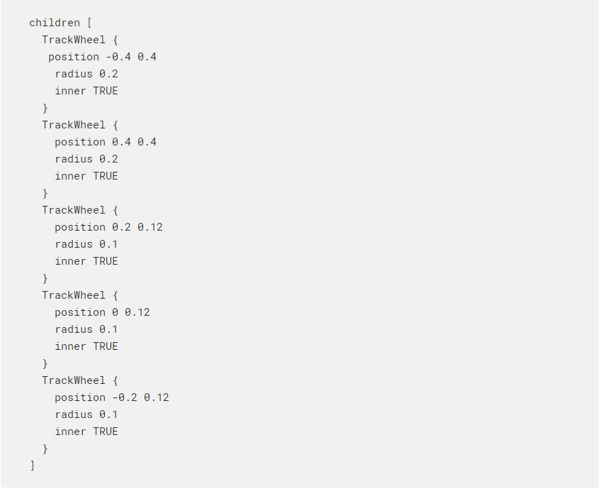
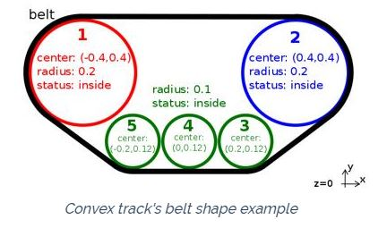
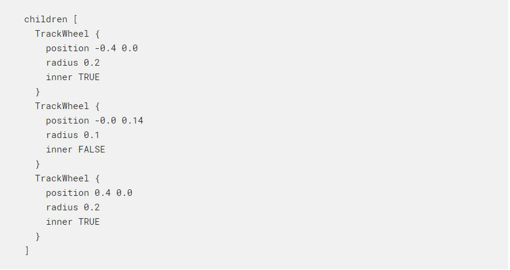
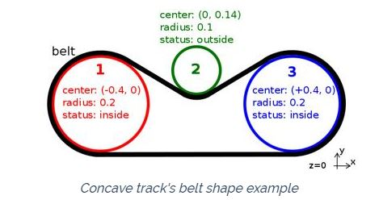

Speaker <<
Previous Next >> 每週進度
Track
軌道
Derived from Solid.
衍生自Solid。

The Track node defines a track object that could be used to model tracks for conveyor belts or tank robots.
軌道節點定義了一個軌道對象，可用於為傳送帶或儲罐機器人建立軌道模型。
Note that this works only in physics-based simulations. Therefore, the physics and boundingObject fields of the Track node and related Solid nodes must be non-NULL for the Track node to behave correctly. It is not a requirement that the boundingObject exactly matches the track belt shape; it is possible to use basic geometries such as boxes and cylinders to specify the external shape of the belt, especially the parts where it may touch the ground or obstacles. A simple example is shown in the following figure.
請注意，這僅在基於物理的仿真中有效。 因此，“跟踪”節點和相關“實體”節點的物理場和boundingObject字段必須為非NULL，才能使“跟踪”節點正確運行。 並不一定要求boundingObject完全匹配履帶的形狀； 可以使用基本的幾何形狀（例如盒子和圓柱體）來指定皮帶的外部形狀，尤其是皮帶可能接觸地面或障礙物的部分。 下圖顯示了一個簡單的示例。
Additionally, in order to work correctly, the Track node has to fulfill these conditions:
此外，為了正常工作，“跟踪”節點必須滿足以下條件：
- the y-axis of the Tracknode is parallel to the world up vector.
- the belt and wheels are aligned on a plane perpendicular to the Tracknode's z-axis.
- 軌跡節點的y軸平行於世界向上向量。
- 皮帶和車輪在垂直於“軌跡”節點的z軸的平面上對齊。

The device field optionally specifies a LinearMotor, a linear PositionSensor and a Brake device. The motor allows to control the motion of the track, and if not specified the track will behave like a fixed joint. Position, velocity or force control can be used but force feedback functions are not available.
設備字段可選地指定LinearMotor，線性PositionSensor和Brake設備。 電機允許控制軌道的運動，如果未指定，軌道的行為將類似於固定關節。 可以使用位置，速度或力控制，但力反饋功能不可用。
The track system doesn't have any default wheel, but it is possible to insert a TrackWheel node in the children field to define an object that will automatically rotate based on the Track motor speed. Note that the TrackWheel node is an abstract wheel and the shape has to be defined by the user.
跟踪系統沒有默認的滾輪，但是可以在children字段中插入TrackWheel節點，以定義一個根據Track電動機速度自動旋轉的對象。請注意，TrackWheel節點是一個抽象輪子，形狀必須由用戶定義。
Other than the motion, it is also possible to define an animation to show graphically the movement of the track. Two different types of animation are available: texture animation and geometries animation.
除了運動之外，還可以定義動畫以圖形方式顯示軌蹟的運動。 提供兩種不同類型的動畫：紋理動畫和幾何動畫。
Note that the track belt is only automatically generated and displayed in case the geometries animation is enabled. Otherwise it can be manually defined by adding the shape in the children field.
請注意，只有在啟用了幾何圖形動畫的情況下，才會自動生成並顯示履帶。否則，可以通過在子字段中添加形狀來手動定義它。
Text Animation 動畫
The texture animation is the simplest option and consists in scrolling the texture object in the direction defined in the textureAnimation field. This scroll value is combined with the belt velocity in order to update the position of texture at each time step. If the value is [0 0] the texture will not move. Only the first child of the Track is taken into consideration for texture animation, and it has to be a Shape, a Group node or a Group descendant having a Shape node as its first child. Also note that the Appearance node of the Shape and its texture and textureTransform fields have to be explicitly defined.
紋理動畫是最簡單的選項，它包括在textureAnimation字段中定義的方向上滾動紋理對象。 該滾動值與皮帶速度結合在一起，以便在每個時間步長更新紋理的位置。 如果值為[0 0]，紋理將不會移動。 對於紋理動畫，僅考慮Track的第一個子節點，並且它必須是Shape，Group節點或以Shape節點作為其第一子節點的Group子孫。 還要注意，必須顯式定義Shape的Appearance節點及其texture和textureTransform字段。
Note that the TextureTransform node that is going to be automatically altered by the Track functionality cannot be a USE node.
請注意，將由“跟踪”功能自動更改的TextureTransform節點不能是USE節點。
Geometries Animation 幾何公差
The geometries animation consists of a set of pure graphical Shape objects without physics properties moving along a defined belt path.
幾何動畫由一組純圖形的Shape對象組成，沒有物理特性沿定義的傳送帶路徑移動。
The animatedGeometry field contains the specification of the appearance and geometry of the animated objects.
animationGeometry字段包含動畫對象的外觀和幾何形狀的規範。
The geometriesCount field specifies the number of animated objects that will move along the belt path.
geometriesCount字段指定將沿著傳送帶路徑移動的動畫對象的數量。
Note that the geometries animation is enabled only if the geometriesCount value is greater than 0 and the animatedGeometry field is defined.
請注意，僅當geometriesCount值大於0且定義了animationGeometry字段時，才會啟用geometries動畫。
The belt path along which the animated geometries move is shaped to the TrackWheel nodes contained in the children field. Each wheel contains the information about its center position, its radius and if it is inside or outside the belt. By convention the wheels are all aligned on a plane perpendicular to the Track node's z-axis and have to be defined in clockwise order starting from the one with the smallest x-axis position component.
動畫幾何形狀沿其移動的皮帶路徑的形狀為子字段中包含的TrackWheel節點。每個車輪都包含有關其中心位置，半徑以及是否在皮帶內還是皮帶外的信息。按照慣例，所有輪子都在與“軌跡”節點的z軸垂直的平面上對齊，並且必須從具有最小x軸位置分量的輪子開始按順時針順序定義。
The following code fragment shows the belt path definition for the convex track example shown in this figure:
以下代碼片段顯示了此圖中所示的凸軌示例的皮帶路徑定義：


Then for a concave track belt shape like the one shown in this figurefollowing TrackWheel nodes have to be defined:
然後，對於如圖所示的凹形履帶，必須定義以下TrackWheel節點：


Speaker <<
Previous Next >> 每週進度